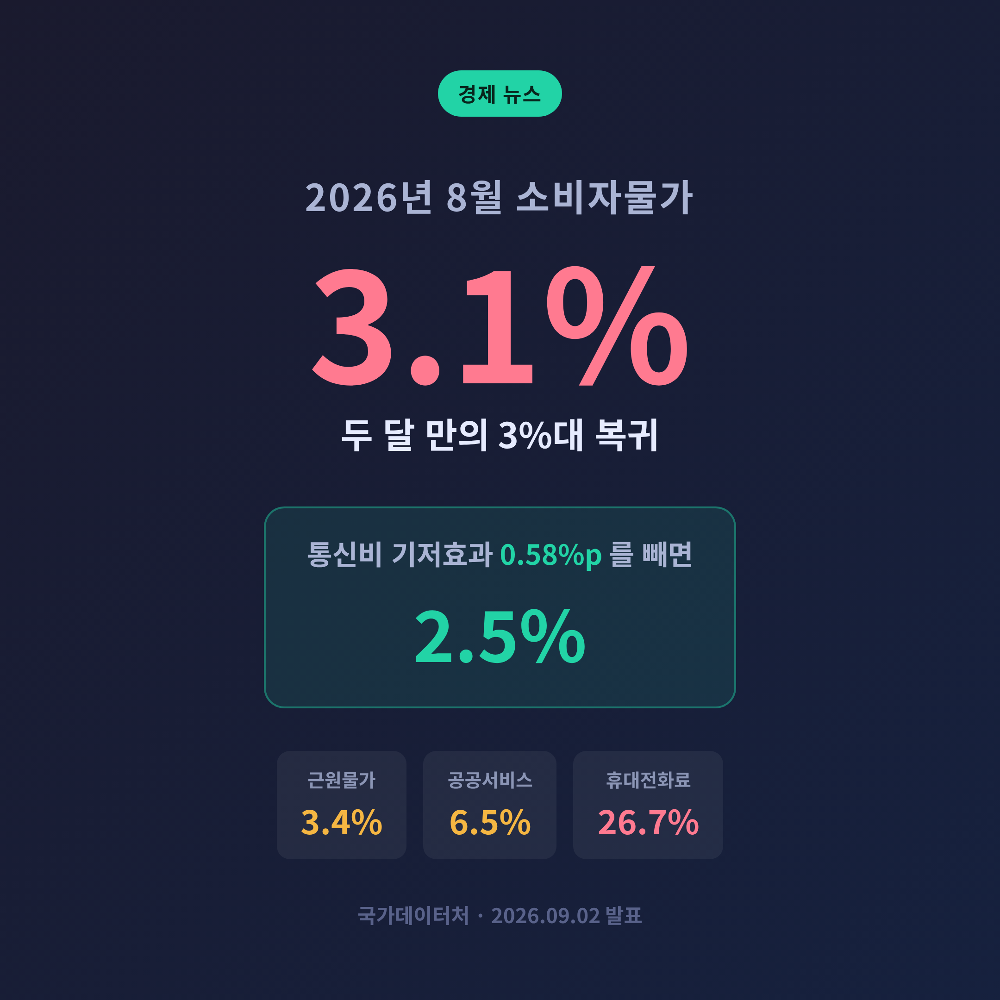
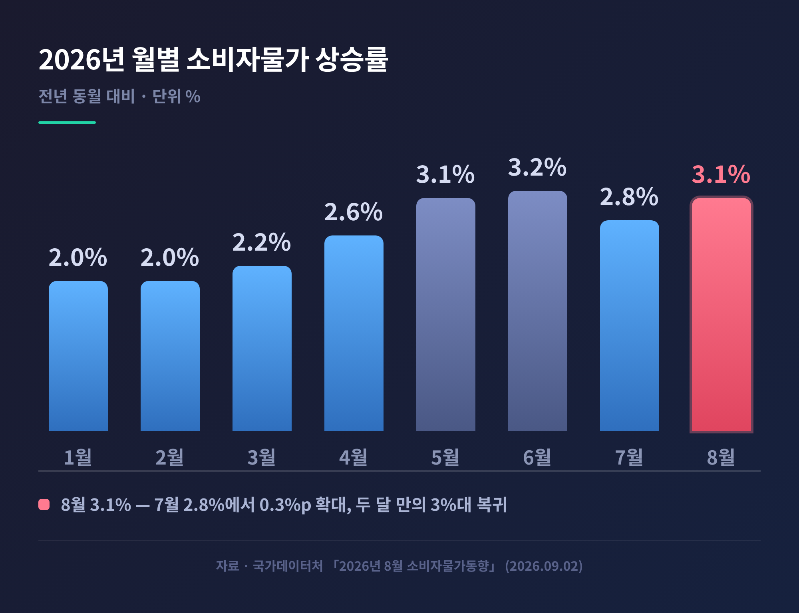
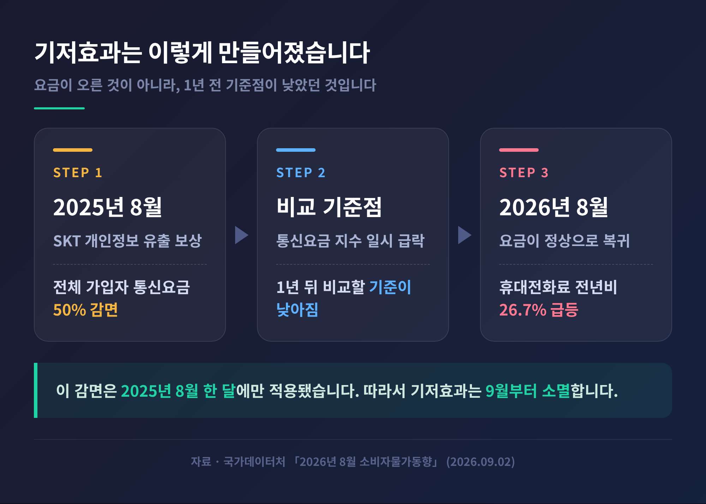
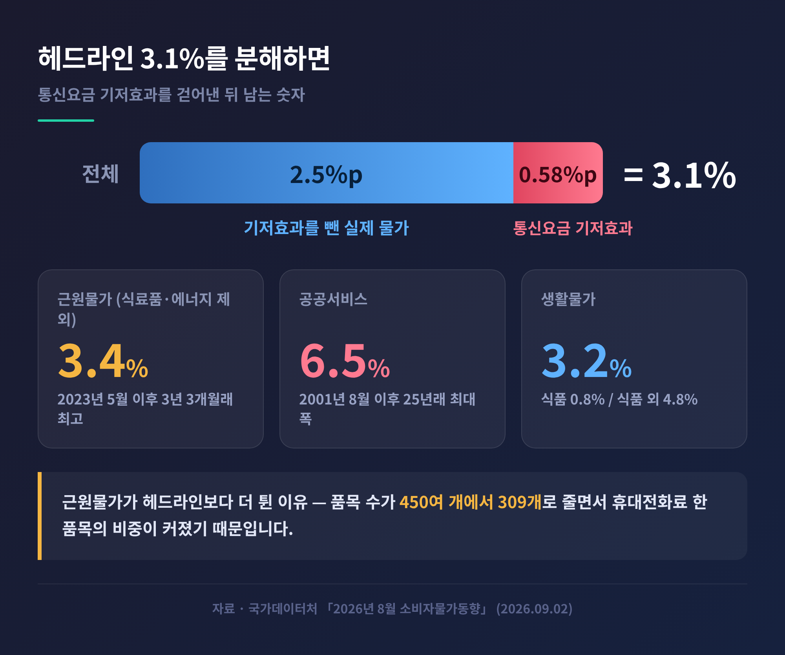
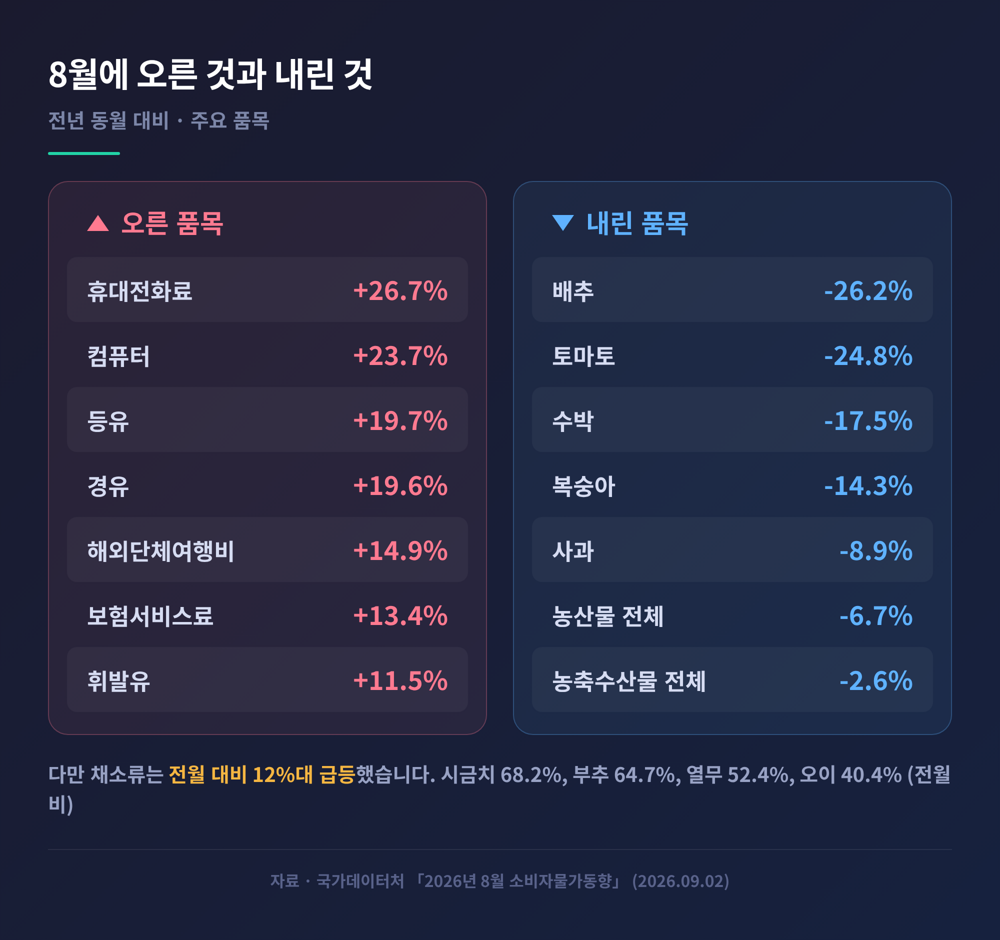
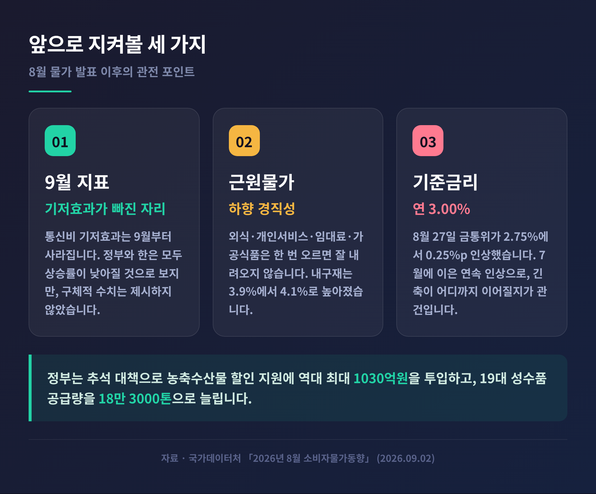

8월 소비자물가 3.1% 상승, 통신비 기저효과 빼면 2.5%인 이유

먼저 세 줄로 정리합니다.
- 2026년 8월 소비자물가지수는 120.05로 전년 동월보다 3.1% 올랐습니다. 두 달 만의 3%대 복귀입니다.
- 이 가운데 0.58%포인트는 지난해 8월 통신요금 50% 감면이 만든 기저효과입니다. 이를 걷어내면 약 2.5%입니다.
- 그럼에도 근원물가는 3.4%, 생활물가는 3.2%였습니다. '착시'만으로는 설명되지 않는 부담이 남아 있습니다.
오늘은 9월 2일 국가데이터처가 발표한 「2026년 8월 소비자물가동향」을 살펴보려 합니다. 같은 숫자를 두고 정부와 중앙은행의 해석이 갈렸습니다. 그 이유까지 함께 짚어보겠습니다.
무슨 일이 있었나 — 두 달 만에 되돌아온 3%대
국가데이터처는 9월 2일 아침 8월 소비자물가동향을 공개했습니다.
8월 소비자물가지수는 120.05였습니다. 2020년을 100으로 놓은 기준입니다. 전년 동월 대비 3.1% 상승, 전월 대비 0.2% 상승입니다.
7월 상승률은 2.8%였습니다. 한 달 만에 0.3%포인트가 올라간 셈입니다.
올해 흐름을 되짚어 보면 방향이 뚜렷합니다. 1월과 2월은 나란히 2.0%였습니다. 3월 2.2%, 4월 2.6%로 완만하게 높아졌습니다. 그러다 5월 3.1%, 6월 3.2%로 뛰었습니다. 아시아경제는 이 구간의 급등 배경으로 중동전쟁 충격을 지목했습니다. 7월에는 2.8%로 내려앉았습니다. 그리고 8월, 다시 3.1%입니다.
1~8월 누계 상승률은 2.6%로 집계됐습니다.

숫자만 보면 물가가 다시 고삐를 놓친 것처럼 보입니다. 그런데 발표 당일 정부의 설명은 정반대였습니다.
3.1%의 절반 이상을 만든 것 — 휴대전화료 26.7%
이번 발표에서 가장 눈에 띈 항목은 통신이었습니다.
통신 물가는 전년 동월보다 16.6% 올랐습니다. 1985년 1월 관련 통계를 작성한 이래 가장 큰 폭입니다. 41년 만의 기록입니다.
그 안에서 휴대전화료가 26.7% 뛰었습니다. 불과 한 달 전인 7월의 휴대전화료 상승률은 0.1%였습니다. 0.1%에서 26.7%로, 한 달 만에 지표가 통째로 뒤집힌 것입니다.
요금이 실제로 오른 것은 아닙니다. 원인은 1년 전에 있습니다.
2025년 8월, SK텔레콤은 개인정보 유출 사고에 대한 보상으로 전체 가입자의 통신요금을 50% 감면했습니다. 그 달 통신요금 지수가 일시적으로 크게 내려앉았습니다. 물가는 1년 전 같은 달과 비교해 계산합니다. 기준점이 비정상적으로 낮았으니, 정상 요금으로 돌아온 올해 8월에는 상승률이 폭등할 수밖에 없었습니다.
이것이 이른바 기저효과입니다.

이두원 국가데이터처 경제동향통계심의관은 기자단에 이렇게 설명했습니다.
"작년 8월 요금 감면에 의한 기저효과가 대략 0.58%포인트 정도이며, 이를 제거했을 때 전체 물가는 대략 2.5% 수준으로 보인다."
정리하면 이렇습니다. 헤드라인 3.1% 가운데 0.58%포인트가 통신요금 한 항목이 만든 착시입니다. 이를 덜어내면 약 2.5%가 남습니다. 재정경제부도 같은 취지로 설명했습니다. 아시아경제는 통신 물가가 전체 상승률에 기여한 폭을 0.63%포인트로 전했습니다. 순수한 기저효과분 0.58%포인트에 통신 항목 자체의 상승분이 더해진 수치로 보입니다.
중요한 점은 이 감면이 2025년 8월 한 달에만 적용됐다는 사실입니다. 따라서 기저효과는 9월부터 사라집니다. 8월 수치가 일회성 튐이라는 정부 설명의 근거가 여기에 있습니다.
왜 중요한가 — 25년 만의 공공서비스, 3년 3개월 만의 근원물가
기저효과는 헤드라인만 흔든 것이 아닙니다. 하위 지표들도 함께 밀어 올렸습니다.
공공서비스 물가가 전년 동월 대비 6.5% 올랐습니다. 7월에는 1.4%였습니다. 한 달 만에 5.1%포인트가 벌어졌습니다. 2001년 8월 7.2% 이후 25년 만에 가장 큰 폭입니다. 휴대전화료가 공공서비스 항목에 포함되기 때문입니다. 여기에 국제유가에 연동된 항공료 인상도 가세했습니다.
더 주목할 곳은 근원물가입니다.
식료품과 에너지를 뺀 OECD 방식 근원물가가 3.4% 상승했습니다. 7월 2.6%에서 0.8%포인트 확대됐습니다. 2023년 5월 3.8% 이후 3년 3개월 만의 최고치입니다. 농산물과 석유류를 제외한 한국식 근원물가도 3.1%로, 2023년 12월 이후 2년 8개월 만에 가장 높았습니다.
근원물가는 계절 요인이나 유가 변동처럼 외부 충격에 흔들리는 품목을 걷어내고 산출합니다. 외식, 개인서비스, 임대료, 가공식품이 주된 구성 요소입니다. 이들은 한 번 오르면 좀처럼 내려오지 않는 하향 경직성을 갖습니다. 그래서 흔히 '물가의 기초 체력'이라 부릅니다.
기초 체력 지표가 헤드라인보다 더 크게 튄 이유도 기저효과에 있습니다. 이 심의관의 설명은 이렇습니다.
"근원지수는 품목 수가 450여 개에서 309개로 줄어드는 만큼 통신요금 기저효과가 더 크게 나타난다."
바스켓이 좁아질수록 휴대전화료 한 품목이 차지하는 비중이 커집니다. 그만큼 왜곡도 증폭됩니다.

착시인가 실체인가 — 갈린 두 개의 해석
여기서 정부와 한국은행의 시선이 갈립니다.
국가데이터처와 재정경제부는 착시 쪽에 무게를 둡니다. 근거는 분명합니다. 0.58%포인트를 걷어내면 2.5%이고, 그 효과는 9월에 소멸합니다.
한국은행의 판단은 조금 다릅니다. 한은은 9월 2일 이지호 부총재보 주재로 물가 상황 점검회의를 열었습니다. 9월 상승률이 8월보다 낮아질 것이라는 데는 동의했습니다. 다만 근원 품목을 중심으로 한 기조적 오름세는 이어질 것으로 봤습니다.
"중동전쟁과 관련한 불확실성이 여전히 높은 가운데 비용충격의 전이, 수요측 압력 확대 등으로 근원물가를 중심으로 높은 오름세를 지속할 것으로 예상된다."
이지호 부총재보의 말입니다. 한은 자료를 보면 근거가 보입니다. 통신비를 빼고 봐도 내구재 상승률이 3.9%에서 4.1%로 높아졌고, 개인서비스는 3.5%를 유지했습니다. 기저효과와 무관한 항목들입니다.
체감물가 쪽은 더 냉정합니다. 생활물가지수는 3.2% 올랐습니다. 그런데 내용을 뜯어보면 식품이 0.8%, 식품 이외 품목이 4.8%입니다. 식품 외 생활물가가 전체 상승률을 크게 웃돌았습니다.
먹거리도 안심할 수준은 아닙니다. 가공식품이 1.5% 올라 7월 1.0%보다 오름폭이 커졌습니다. 출고가 인상이 순차적으로 반영된 결과입니다. 전월과 비교하면 국수 12.1%, 시리얼 14.9%, 스낵과자 3.2%, 빵 3.0%가 한 달 새 올랐습니다.
두 해석 모두 사실에 근거합니다. 어느 한쪽이 틀렸다고 말하기 어렵습니다.
물가를 눌러준 쪽도 있었습니다
오르기만 한 것은 아닙니다.
농축수산물은 전년 동월보다 2.6% 내렸습니다. 농산물이 6.7% 하락한 영향이 컸습니다. 출하량이 늘었고 정부 할인 지원 행사가 겹쳤습니다. 배추 26.2%, 토마토 24.8%, 수박 17.5%, 복숭아 14.3%, 사과 8.9%가 1년 전보다 쌌습니다.
다만 장바구니 체감과는 거리가 있습니다. 쌀은 6.2%, 수입 쇠고기는 7.4%, 고등어는 6.5%, 달걀은 5.2% 올랐습니다. 자주 사는 품목일수록 오름세가 두드러졌습니다.
전월과 비교하면 이야기가 또 달라집니다. 채소류가 한 달 새 12%대로 급등했습니다. 시금치 68.2%, 부추 64.7%, 열무 52.4%, 오이 40.4%, 배추 37.0%, 상추 28.4%가 7월보다 올랐습니다. 여름철 기온 상승으로 출하량이 줄고, 휴가철 수요와 병충해 방제 비용이 겹친 탓입니다.
석유류는 14.2% 상승했습니다. 여전히 두 자릿수입니다만, 7월 15.5%보다는 오름폭이 줄었습니다. 정부의 석유류 최고가격 지정 이후 가격이 동결세를 보인 영향입니다. 8월 두바이유 평균 가격은 배럴당 88.8달러로 7월 76.8달러보다 올랐습니다. 대신 원·달러 환율이 1489원에서 1404원으로 내리며 충격을 흡수했습니다.
공업제품은 3.7% 올라 전체 물가를 1.24%포인트 끌어올렸습니다. 기여도로는 가장 큽니다. 반도체 가격 상승과 신제품 출시로 컴퓨터가 23.7%, 휴대용멀티미디어기기가 22.5% 뛰었습니다. 전기·가스·수도는 0.4% 상승에 그쳤습니다.

앞으로 무엇을 봐야 하나
세 가지를 지켜볼 만합니다.
첫째, 9월 지표입니다. 통신요금 기저효과는 9월부터 사라집니다. 정부와 한은 모두 9월 상승률이 8월보다 낮아질 것으로 봅니다. 다만 구체적인 수치 전망은 어느 쪽도 내놓지 않았습니다. 관건은 기저효과가 빠진 자리에 무엇이 남느냐입니다.
둘째, 근원물가의 방향입니다. 9월 근원물가가 3%대 초반으로만 내려앉아도 기조적 압력이 살아 있다는 신호가 됩니다. 한은이 경계심을 거두지 않는 이유이기도 합니다.
셋째, 통화정책입니다. 한국은행은 8월 27일 금융통화위원회에서 기준금리를 연 2.75%에서 3.00%로 0.25%포인트 인상했습니다. 7월에 3년 9개월 만에 인상한 데 이은 연속 인상입니다. 물가 상방 압력에 선제 대응한다는 취지였습니다. 예전에는 금리 인하 시점이 관심사였습니다. 지금은 긴축이 어디까지 이어질지가 질문입니다.
가계 입장에서는 부담이 겹칩니다. 물가가 오르는 동시에 대출금리도 오르는 국면입니다.
정부는 추석을 앞두고 대응에 나섰습니다. 9월 2일 강기룡 재정경제부 차관보 주재로 물가관계부처회의 겸 제1차 민생침해 범정부 합동대응반 회의가 열렸습니다. 농축수산물 할인 지원에 역대 최대인 1030억원을 투입해 최대 40~50% 할인하고, 19대 성수품 공급량도 역대 최대인 18만 3000톤으로 늘립니다. 농축산물·수산물 시장 각 300곳에서는 구매액의 30%를 온누리상품권으로 돌려주는 행사도 진행합니다. 환급 한도는 2만원입니다.

정리하면 이렇습니다.
8월의 3.1%는 절반쯤 착시였습니다. 통신요금 한 항목이 만든 0.58%포인트를 덜어내면 2.5%였고, 그 효과는 이번 달로 끝납니다. 여기까지는 정부 설명이 맞습니다.
그러나 나머지 절반은 착시가 아니었습니다. 식품 외 생활물가 4.8%, 내구재 4.1%, 하향 경직성을 가진 근원 품목들의 오름세는 기저효과와 무관하게 남아 있습니다.
"착시를 걷어낸 자리에 무엇이 남는가." 결국 9월 지표가 답할 질문은 이것 하나입니다.
숫자 하나로 물가를 다 읽을 수 있느냐고 물으신다면, 저는 그렇지 않다고 답하겠습니다. 헤드라인 아래를 한 번 더 들여다보시길 권합니다.
참고: 이 글은 국가데이터처 「2026년 8월 소비자물가동향」과 관련 보도를 정리한 정보성 콘텐츠입니다. 특정 종목이나 자산에 대한 투자 권유가 아니며, 투자 판단과 그 결과에 대한 책임은 투자자 본인에게 있습니다. 통계 수치는 발표 시점 기준이며 이후 개편·수정될 수 있습니다.